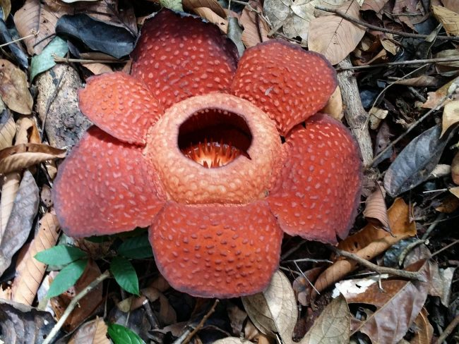

Rafflesia
Esta planta es la Rafflesia,la mas grande del mundo y huele a
carne podrida

Datos acerca de la Rafflesia
Está en los bosques húmedos de Indonesia y Asia
Descubierta en 1818
Algunas especies son
- Arnoldii
- Kerrii
- Patma
Localización
Video demostración